[Sep-2025] I joined xAI as a Member of Technical Staff!
[May-2025] We presented our work Hierarchical Prompt Decision Transformer: Improving Few-Shot Policy Generalization with Global and Adaptive Guidance at WWW'25.
[APR-2025] We released Llama4! I'm a core contributor on safety and value alignment. [Launch Post].
[Nov-2024] We presented our work LaRS: Latent Reasoning Skills for Chain-of-Thought Reasoning at EMNLP Findings 2024.
[July-2024] Our work OptoGPT, a foundation model for optical inverse design, has been published as a cover article in Opto-Electronic Advances (IF: 14.1). The work has been reported in over 15 news outlets [News1] [News2] [News3].
[Dec-2023] Our work Graph Neural Prompting with Large Language Models is accepted by AAAI-24.
[Mar-2022] I joined AWS as a Research Scientist!
The full list of my publications can be found on Google Scholar.
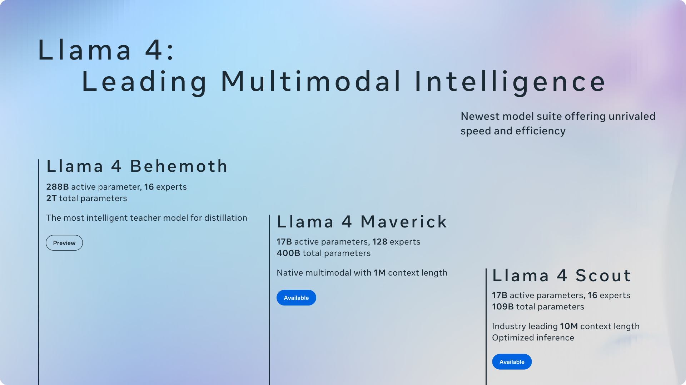
Llama Team
2025
Llama 4 family of models. I'm a core contributor to alignment post-training.
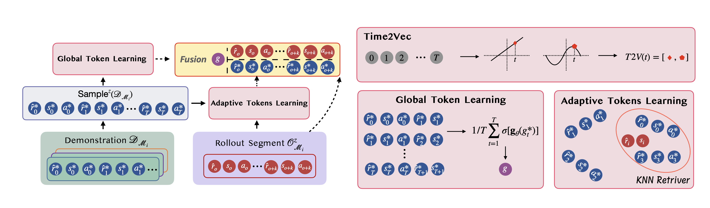
Zhe Wang, Haozhu Wang, Yanjun Qi
WWW'25
We developed a hierarchical prompting method for transformer-based reinforcement learning models to enable efficient few-shot policy adaptation.
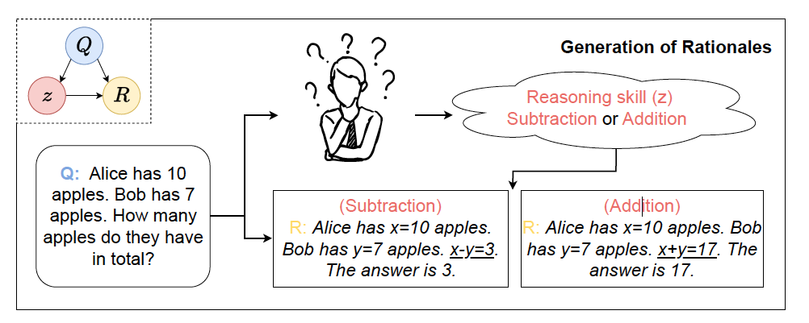
Zifan Xu, Haozhu Wang, Dmitriy Bespalov, Xian Wu, Peter Stone, Yanjun Qi
EMNLP Findings, 2024
We developed an unsupervised method for discovering latent skills to guide the demonstration selection for in-context learning with large language models.
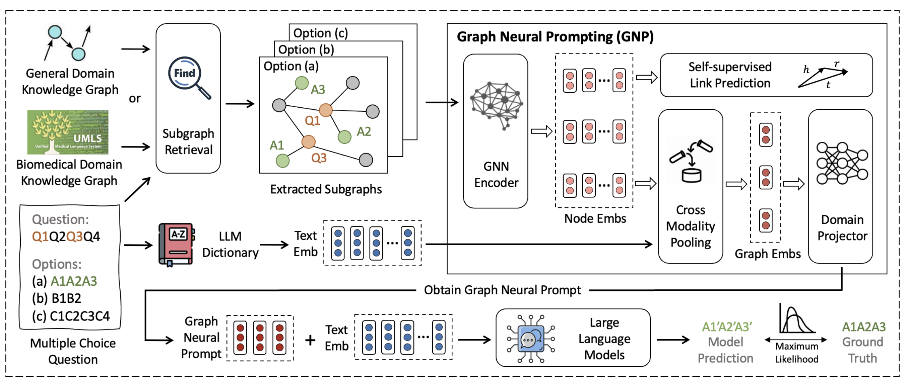
Yijun Tian, Huan Song, Zichen Wang, Haozhu Wang, Ziqing Hu, Fang Wang, Nitesh V.Chawla, Panpan Xu
AAAI, 2024
A knowledge graph prompting method for large language models to improve their commonsense and biomedical reasoning performance.
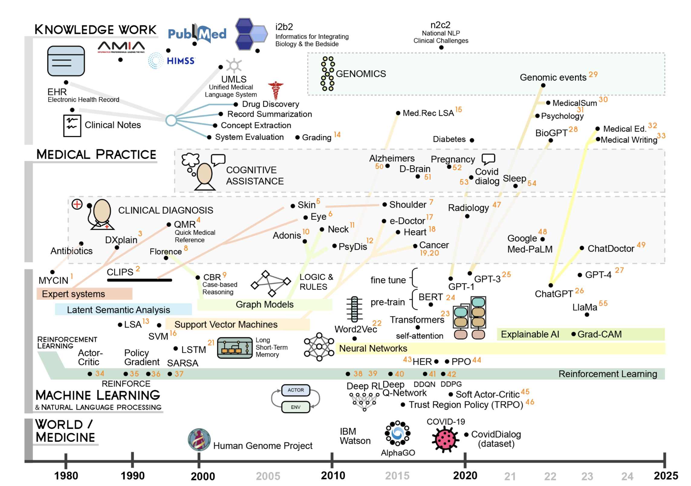
Ying Liu, Haozhu Wang, Huixue Zhou, Mingchen Li, Yu Hou, Sicheng Zhou, Fang Wang, Rama Hoetzlein, Rui Zhang
Journal of the American Medical Informatics Association, 2024
A comprehensive review of reinforcement learning applied to NLP and its healthcare applications.
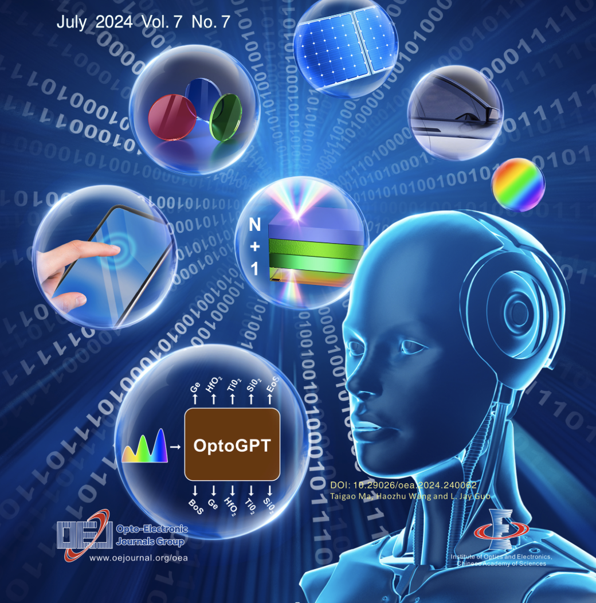
Taigao Ma, Haozhu Wang, L. Jay Guo
Opto-Electronic Advances, 2024
We developed OptoGPT, the first foundation model for optical thin film structure inverse design. After being trained on a large dataset of 10 million optical thin film designs, OptoGPT demonstrates remarkable capabilities including: 1) autonomous global design exploration, 2) efficient designs for various tasks, 3) the ability to output diverse designs, and 4) seamless integration of user-defined constraints. We believe OptoGPT is a major leap towards accelerating optical science with foundation models.
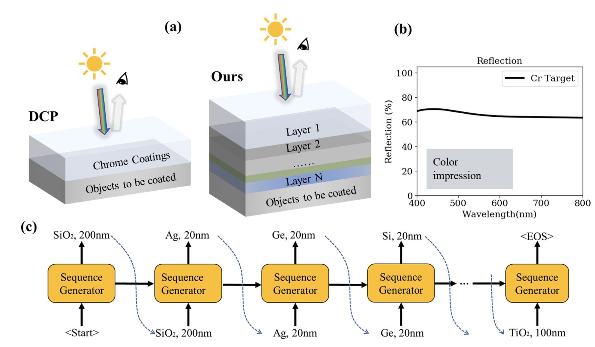
Taigao Ma, Anwesha Saha, Haozhu Wang, L. Jay Guo
NeurIPS AI for Science Workshop, 2023 [Oral, selection rate: 10/150=6.7%]
Using reinforcement learning, we designed and fabricated two multilayer thin film structures that can mimic the visual appearance of decorative chrome plating, serving as an environmentally friendly and multi-functional replacement.
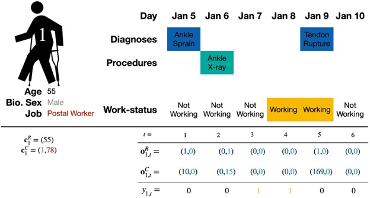
Erkin Ötleş, Jon Seymour, Haozhu Wang, Brian T Denton
Journal of the American Medical Informatics Association, 2022
We developed a forecasting model to predict return-to-work after occupational injuries based on longitudinal claim data. The model may allow case managers to better allocate medical resources and help speed up patients' recovery process.
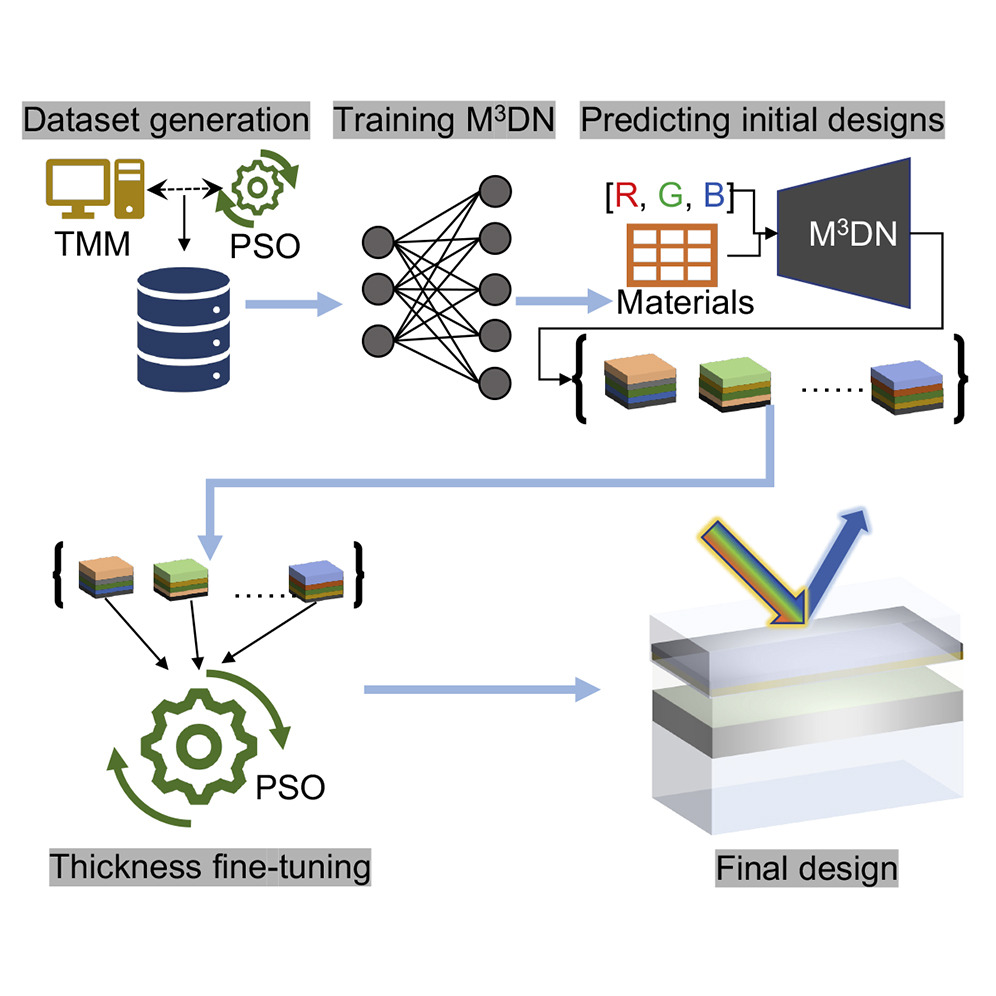
Haozhu Wang, L. Jay Guo
iScience, 2022
We propose a hybrid machine learning and optimization method that combines mixture density networks and particle swarm optimization for accurate and efficient structural color inverse design.
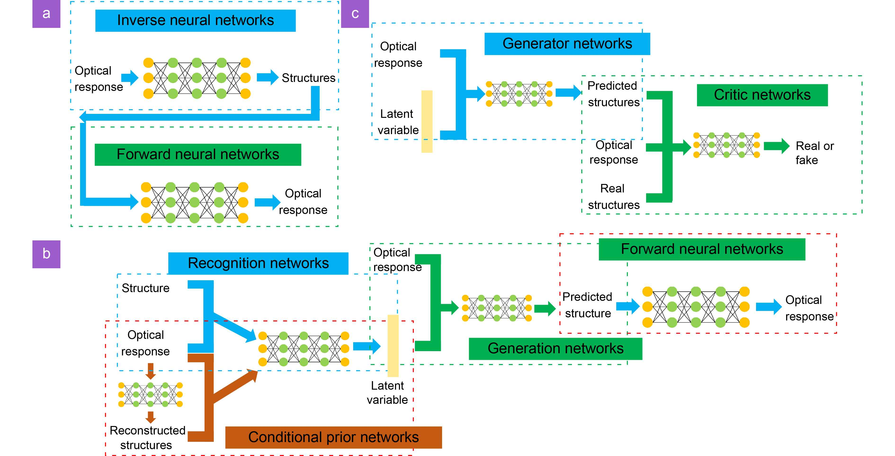
Taigao Ma, Mustafa Tobah, Haozhu Wang*, L. Jay Guo*
Opto-Electronic Science, 2022 (*: correspondence)
We provide extensive benchmarking results on accuracy, diversity, robustness for commonly used deep learning models in nanophotonic inverse designs. The findings can help researchers select models that best suit their design problems.
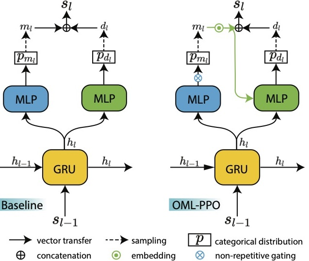
Haozhu Wang, Zeyu Zheng, Chengang Ji, L. Jay Guo
Machine Learning: Science and Technology, 2021
Training a novel sequence generation network with Proximal Policy Optimization for automatically discovering near-optimal optical designs.
{kind=link}